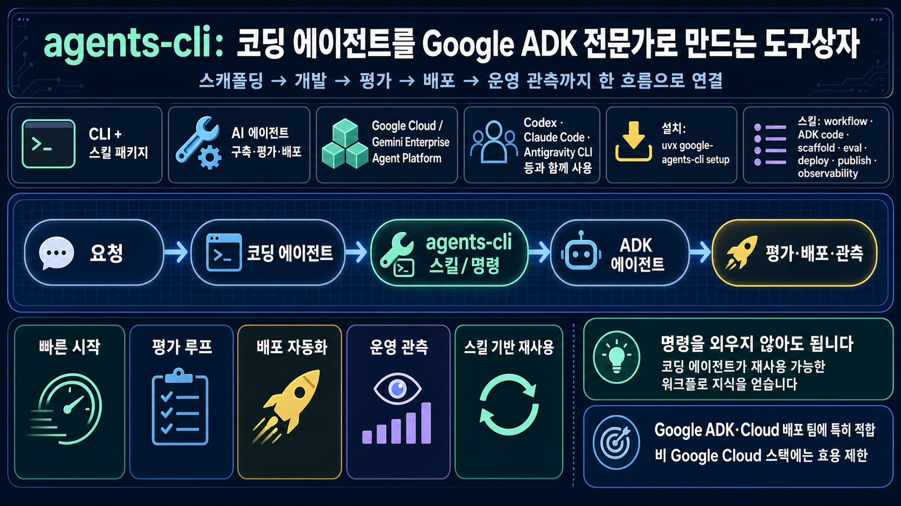

인포그래픽 크게 보기

GitHub Repository Report
코딩 에이전트에게
ADK 개발 전 과정을
가르치는 CLI
google/agents-cli는 Codex·Claude Code·Antigravity 같은 코딩 에이전트가 Google ADK 기반 AI 에이전트를 만들고, 평가하고, Google Cloud에 배포하도록 돕는 CLI + 스킬 패키지입니다.
5,051GitHub Stars
536Forks
27Open Issues
v1.1.0최신 릴리스
1. 이 레포가 해결하는 문제
2. 작동 흐름
요청“문서 Q&A 에이전트를 만들어줘”처럼 목표를 전달
스킬 활성화workflow, scaffold, eval, deploy 등 맥락 주입
프로젝트 생성
agents-cli scaffold로 ADK 템플릿 구성품질 루프eval generate/grade/analyze/optimize로 개선
배포·운영Agent Runtime, Cloud Run, GKE, 관측까지 연결
3. 핵심 기능 카드
스캐폴딩
Python, Go, Java, TypeScript 기반 ADK 에이전트 템플릿과 배포/CI 구조를 빠르게 시작합니다.
평가 플라이휠
평가 데이터 생성, 추론 실행, 채점, 비교, 실패 분석, 프롬프트 최적화 흐름을 제공합니다.
배포 자동화
Agent Runtime, Cloud Run, GKE, Terraform, CI/CD 구성을 한 도구 안에서 안내합니다.
스킬 번들
코딩 에이전트가 ADK API, 배포, 관측, 등록 과정을 실수 없이 따르도록 7개 스킬을 제공합니다.
기존 코딩 에이전트 호환
Codex, Claude Code, Antigravity CLI 등과 함께 쓰도록 설계되어 도구 교체가 아니라 보강에 가깝습니다.
운영 관측
Cloud Trace, Cloud Logging, BigQuery 분석 등 운영 단계의 확인 루프를 함께 다룹니다.